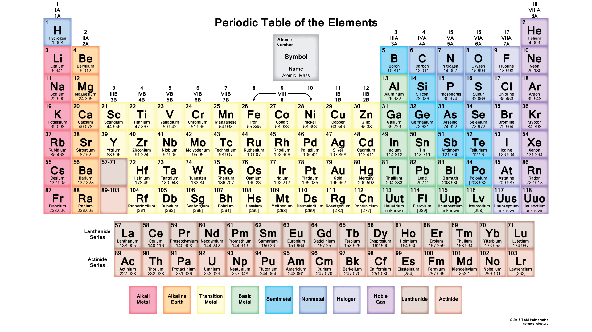

Astronomy at Woodside
- Stars and Galaxies (handout, worksheet)
- The Observable Universe & Cosmic Calendar (handout)
- The Universe (handout, worksheet)
- History of Astronomy (handout, worksheet)
Day 7: Wed 16 Mar 2016
- The Universe QUIZ
- Finish Stars & Galaxies
- Stars & Galaxies Worksheet
- This week's sky
- Stars & Galaxies Worksheet DUE Friday
Day 6: Mon 14 Mar 2016
- This week's sky
- Review Stars and Distances
- Discuss Stars & Galaxies
- Return History quiz and Universe worksheet
- Review for The Universe QUIZ on Wednesday
Day 5: Wednesday 9 Mar 2016
- History of Astronomy QUIZ
- Finish: The Universe (Observable Universe & Cosmic Calendar)
- Video: The Known Universe (7 min)
- This Week's Sky
- The Universe Worksheet DUE Friday
Day 4: Mon 7 Mar 2016
- History of Astronomy worksheet DUE
- Discuss: Planispheres, The Universe, Greek alphabet
- Assignment: Study for History of Astronomy QUIZ
Day 3: Wed 2 Mar 2016
- Finish: History of Astronomy
- Review: History of Astronomy, Vocabulary
- Assignment: History of Astronomy, Vocabulary, Symbols, Greek
Day 2: Mon 29 Feb 2016
- Review: Student questionnaire
- Discuss:Syllabus, Website, History of Astronomy, Planetarium software
- Assignment: History of Astronomy
Day 1: Fri 26 Feb 2016
- Introductions!
- Discuss: Student questionnaire
- Assignment: Student questionnaire (Due Monday)
Selected Events
“This adventure is made possible by generations of searchers strictly adhering to a simple set of rules. Test ideas by experiments and observations. Build on those ideas that pass the test. Reject the ones that fail. Follow the evidence wherever it leads, and question everything. Accept these terms, and the cosmos is yours.”
— Neil deGrasse Tyson
Outline
- History of Astronomy
- The Cosmos, or Universe
- Stars, Galaxies, and Black Holes
- The Solar System
- The Seasons and Planetary Phenomena
- Observing with Telescopes and Binoculars
- Astrobiology
- Exotic objects
Points available
See this document: Points available
Current Sky
- This Week's Sky — daily viewing tips, and planet round-up for the week
- Sky Maps — monthly sky maps
- In the Sky This Month — what's in the sky this month from StarDate
- Discover the Night Sky — monthly sky tour podcast (8 min)
- Weekly Sky Report — from Griffith Observatory in Los Angeles (3 min)
- StarDate — the night sky, science, history, and skylore (3 min)
- Recent and Upcoming Phenomena — U.S. Naval Observatory
- Sun and Moon data for one day — USNO and Clear Sky Chart
Coordinates
Location Latitude Longitude Moon San Francisco, CA 37° 47' 19"N 122° 24' 51"W Current moon
Clear Sky Chart

Current Solar System Configuration
Astronomical Symbols

Greek Alphabet

Electromagnetic Spectrum

Periodic Table of Elements
88 Modern Constellations

Resources
- Heavens Above currently visible man-made objects
- Star Tales by Ian Ridpath
- Stellarium planetarium software
- Wolfram Alpha Astronomy examples
Further Resources
- Astronomical Society of the Pacific
- Earth & Sky updates on your cosmos and world
- Google Sky browse and explore the universe
- The Hitchhiker's Guide to the Galaxy: Earth Edition
- Universe Today space and astronomy news
- Zooniverse citizen science

{kind=link}